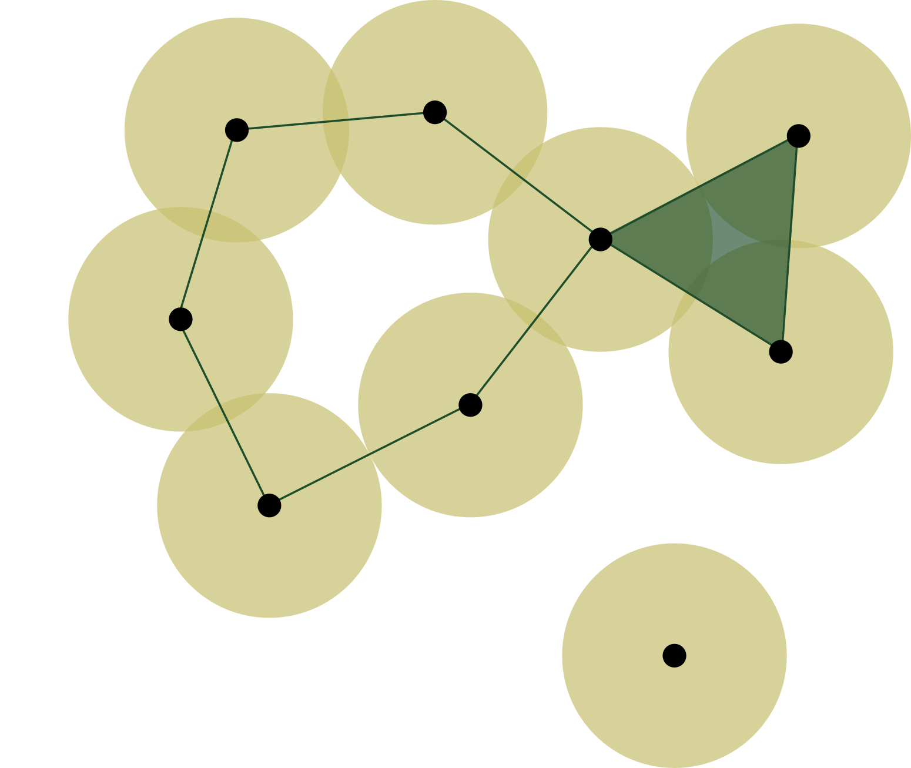
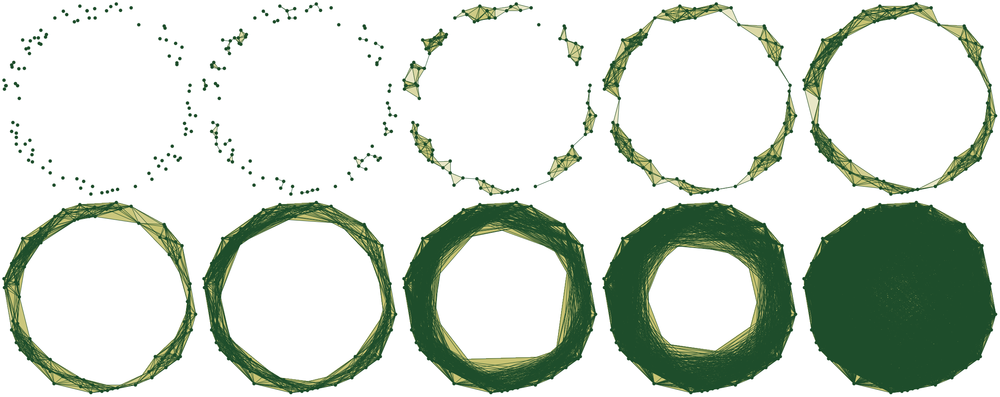
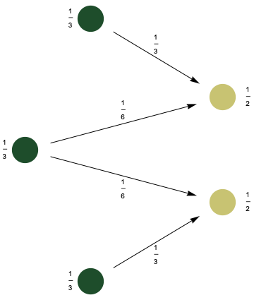
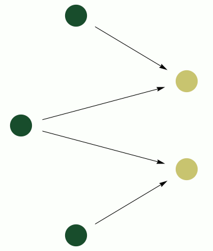
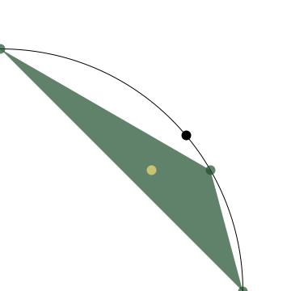
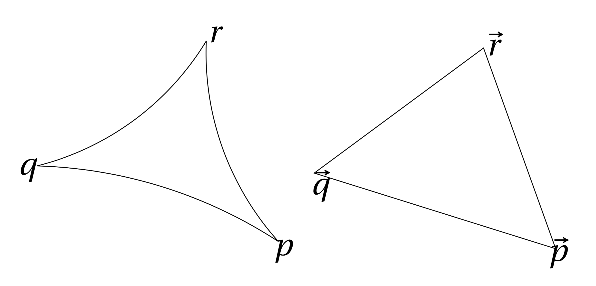
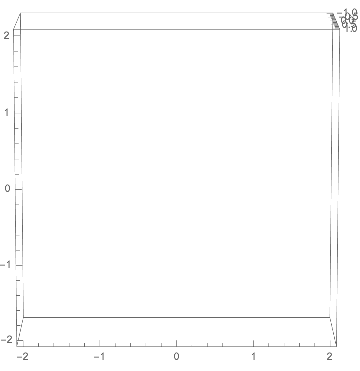
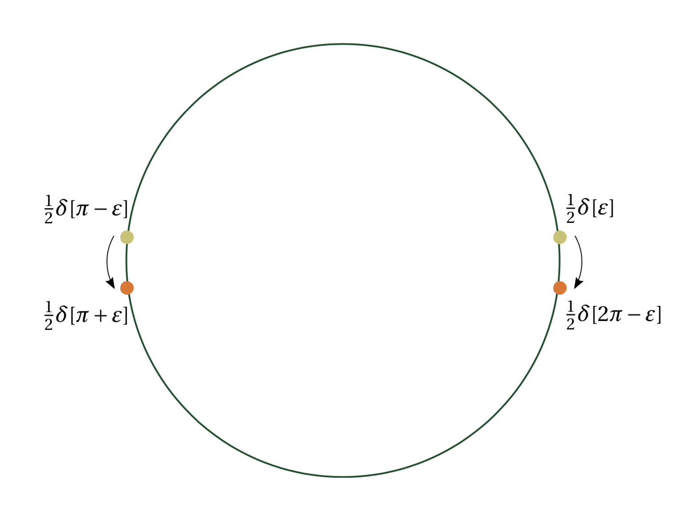
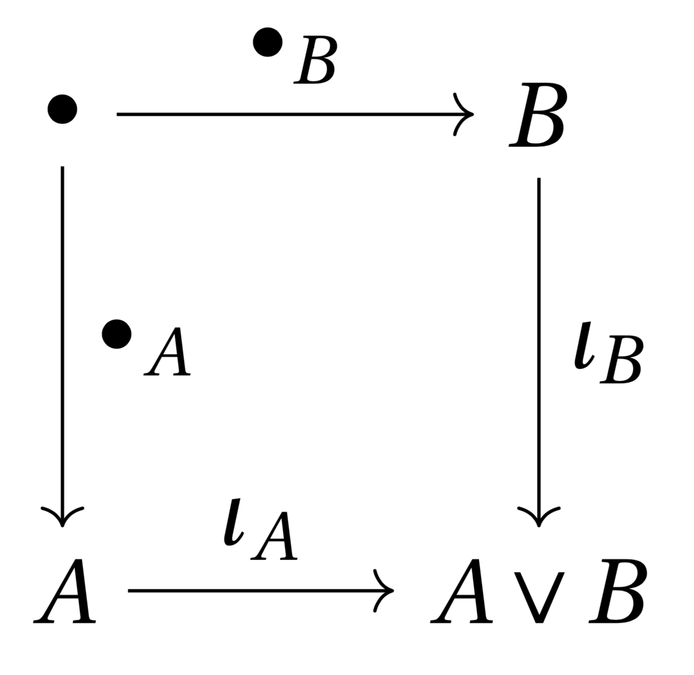

class: center, middle, titlepage count: false # Vietoris–Rips Thickenings and Wasserstein Spaces ### Joshua Mirth ## Thesis Defense – May 15, 2020 --- # Outline .fiftyfiftyleft[ 1. Background 1. Vietoris–Rips Complexes 2. Wasserstein Space 2. Homotopy Types via Geodesic Flows 3. Toward a Morse Theory 4. Categorical Perspective ] .fiftyfiftyright[ **Main Goal:** Understand the topological structure of Vietoris–Rips metric thickenings, using: * Metric geometry, * Optimal transport theory, and * Category theory. ] --- # Background: .defn[**Definition:**] An **abstract simplicial complex** is a set `\(S\)` and a collection `\(K\)` of finite nonempty subsets `\(\sigma\)` of `\(S\)` called simplices. These must satisfy: * All singleton sets `\(\{s\}\)` are contained in `\(K\)`, and * If `\(\sigma) \in K\)` and `\(\tau \subseteq \sigma\)`, then `\(\tau \in K\)`. .center[] .defn[**Definition:**] The _Vietoris–Rips simplicial complex_, `\(\mathrm{VR}(X;r)\)`, on a metric space `\(X\)` at scale parameter `\(r\)` contains a `\(k\)`-simplex `\(\sigma = [x_0 , \ldots , x_k]\)` for every set of `\(k+1\)` points `\(\{ x_0 , \ldots , x_k\}\)` in `\(X\)` with $$ \max_{i,j\in[0,\ldots,k]} d(x_i,x_j) \le r . $$ --- ## Example: A space `\(X \subset \mathbb{R}^2\)` and its Vietoris–Rips filtration at different scale parameters `\(r\)`: .center[] --- # History * Introduced by Leopold Vietoris in the 1930s. By taking the limit `\(r \to 0\)` this assigns a "canonical" simplicial complex to any metric space. * Rediscovered in the 1980s in the context of geometric group theory by Rips and Gromov. At large enough scales `\(\mathrm{VR}(X;r)\)` is always contractible—Gromov and Rips interested in determining the smallest `\(r\)` where this happens. * Scales between `\(0\)` and `\(\infty\)` first studied by Hausmann (1995) who showed that `\(\mathrm{VR}(M;r) \simeq M\)` for small `\(r\)` and `\(M\)` a smooth manifold. * Renewed interest because of _persistent homology_. The Vietoris–Rips complex is a computationally tractable filtration of a (finite) metric space. * [Adamaszek, Adams] determined the exact homotopy type of `\(\mathrm{VR}(S^1;r)\)` for all `\(r\)`, in particular, all odd-dimensional spheres appear at some `\(r\)`. --- ## Aside: Simplicial Complex Topology The homotopy type mentioned above is for an abstract simplicial complex given the _simplicial complex topology_. This topology has some surprising effects: **Example:** If `\(X = \mathbb{S}^1\)`, then `\(\mathrm{VR}(X;0)\)` is an uncountable set of discrete points. .center[<img src="circle_explode.png" width=40% height=40% /> `\(\mathbb{S}^1\)` and `\(\mathrm{VR}(\mathbb{S}^1;0)\)` (imagine uncountably many points on the right!)] One consequence is that the map `\(x \mapsto [x]\)` sending a point `\(x \in X\)` to a vertex in `\(\mathrm{VR}(X;r)\)` is not continuous in general. --- # Vietoris–Rips Metric Thickenings Reinterpret simplices as _discrete probability measures_ on `\(X\)`. * In the geometric realization of any simplicial complex, a point in a simplex is specified by barycentric coordinates: if `\(\sigma = [x_0 , \ldots , x_k]\)`, then any `\(x \in \sigma\)` is given by a formal sum `$$ x = \sum_{i=0}^{k} \lambda_{i} x_{i} $$` where `\(\sum \lambda_{i} = 1 \)` and `\(\lambda_i > 0\)` for all `\(i\)`. * Points can therefore be interpreted as probability measures: `$$ \displaystyle \sum_{i=0}^{k} \lambda_{i} x_{i} \iff \sum_{i=0}^{k} \lambda_{i} \delta[x_{i}] $$` where `\(\delta[x_{i}] = \delta_{x_i}\)` is the Dirac measure at `\(x_{i} \in X\)`. .defn[**Definition:**] The **Vietoris–Rips metric thickening**, `\(\mathcal{VR}(X;r)\)`, consists of all measures corresponding to points in simplices in `\(\mathrm{VR}(X;r)\)`. --- # Wasserstein Space .figuresplit[] .textsplit[`\(\mathcal{VR}(X;r)\)` lives in the space `\(\mathcal{P}(X)\)` of all probability measures on `\(X\)`. This space can be given a topology by the Wasserstein distance: `$$ \displaystyle W_2(\mu,\nu) = \inf_{\pi} \left( \int_{X \times X} d^2(x,y) \, \mathrm{d}\gamma \right)^{1/2} $$` where the infimum is taken over all measures `\(\pi\)` on `\(X \times X\)` whose marginals are `\(\mu\)` and `\(\nu\)`. ] .textsplit[With this metric, `\(W_2(\delta[x_0],\delta[x_1]) = d(x_0,x_1)\)`, so the inclusion `\(\delta \colon X \to \mathcal{VR}(X;r) \)` is continuous. ] --- # Geodesics in Wasserstein Space A space `\(X\)` is **geodesic** if there is a path (a map `\(\gamma \colon [0,1] \to X\)`) connecting `\(x\)` and `\(y\)` with `\( \mathrm{length}(\gamma) = d(x,y) \)` for all `\(x\)` and `\(y\)` in `\(X\)`. * **Examples:** Euclidean space, Riemannian manifolds, (connected) metric graphs. * **Non-example:** discrete metric spaces. .fiftyfiftyleft[When `\(X\)` is geodesic, so is the Wasserstein space `\(\mathcal{P}(X)\)` by pushing the optimal `\(\pi\)` forward along geodesics. * Note that geodesics are _not_ paths of the form `\((1-t)\mu + t\nu\)`. ] .fiftyfiftyright[.center[ ] ] --- class: center, middle, titlepage count: false # Hausmann-Type Theorems and Geodesics --- # Hausmann-Style Theorems via Geodesics .defn[**Theorem:**] [Hausmann] For a Riemannian manifold `\(M\)`, and sufficiently small `\(r \gt 0\)`, there is a homotopy equivalence between the Vietoris–Rips simplicial complex and the manifold, `\(\mathrm{VR}(M;r) \simeq M\)`. The proof is difficult because there is no natural continuous map `\(M \to \mathrm{VR}(M;r)\)`. .defn[**Theorem:**] For a Riemannian manifold `\(M\)` [Adamaszek, Adams, Frick] and sufficiently small `\(r\)` there is a homotopy equivalence `\(\mathcal{VR}(M;r) \simeq M\)`. _Proof Sketch:_ Map from `\(M \to \mathcal{VR}(M;r)\)` via `\(\delta\)` and from `\(\mathcal{VR}(M;r) \to M\)` via the "Karcher mean." Construct a homotopy using convex linear combinations. **Goals:** * Define a homotopy based on the geodesic structure. * Understand the bound on `\(r\)`. * Extend this theorem to more general spaces. --- ## Setup: Non-Euclidean Center of Mass For a measure `\(\mu\)` on `\(\mathbb{R}^d\)`, the mean `\(\bar{\mu}\)` of `\(\mu\)` is the unique minimum of `$$ P_{\mu}(\vec{x}) = \int_{\mathbb{R}^d} \|\vec{x} - \vec{y}\|^2 \mathrm{d}\mu(\vec{y}) $$` _Define_ the "mean" or center of mass of `\(\mu\)` on a general metric space `\(X\)` to be any minimum of `$$ P_{\mu}(x) = \int_{X} d^2(x,y) \mathrm{d}\mu(y) . $$` Existence of a minimum is guaranteed if `\(X\)` is _proper_. Uniqueness is much harder. Centers of mass on non-Euclidean spaces have been widely studied since [Karcher]. --- ## Proof Outline: Let `\(\delta \colon X \to \mathcal{VR}(X;r)\)` be the Dirac delta map and let `\(K \colon \mathcal{VR}(X;r) \to X\)` be the center of mass map (not necessarily well-defined). Let `\(\gamma_\mu(t)\)` be the geodesic in Wasserstein space connecting `\(\mu\)` to `\(\delta[\bar{\mu}]\)`. To show that `\(X\)` and `\(\mathcal{VR}(X;r)\)` are homotopy equivalent we need to show under some assumptions that 1. That any `\(\mu \in \mathcal{VR}(X;r)\)` has a unique center of mass so `\(K\)` is well-defined, 2. That `\(K\)` is continuous, and 3. That the geodesics `\(\gamma_\mu(t)\)` remain in `\(\mathcal{VR}(X;r)\)`, i.e. the diameter of `\(\gamma_\mu(t)\)` does not increase. .fiftyfiftyleft[ By construction `\(K \circ \delta\)` is the identity on `\(X\)`. When these three conditions hold, there is a homotopy between `\(\delta \circ K\)` and the identity on `\(\mathcal{VR}(X;r)\)`, and thus `\(\mathcal{VR}(X;r) \simeq X\)`. The key to obtaining the three conditions is understanding the _curvature_ of `\(X\)`. ] .fiftyfiftyright[.center[ ] ] --- ## Curvature Considerations A triangle in a geodesic space, `\(X\)`, is a set of three points `\(p, q\)`, and `\(r\)`, and a choice of geodesics connecting each of them. A _comparison triangle_ in `\(\mathbb{R}^d\)` is a triangle with vertices `\(\vec{p}, \vec{q}\)`, and `\(r\)` and side lengths equal to the lengths of the geodesics in `\(X\)`. .center[] The space `\(X\)` is non-positively curved (NPC) in a neighborhood of `\(p,q,\)` and `\(r\)` if the distance from `\(q\)` to every point on the edge between `\(p\)` and `\(r\)` is less than in the Euclidean triangle, and non-negatively curved if greater (and the same holds for all triangles in the neighborhood). Curvature is a local condition, but if it holds for all triangles in `\(X\)`, we say `\(X\)` is globally non-positively or non-negatively curved. --- ## Curvature and Means: * If `\(X\)` is global NPC then any measure `\(\mu\)` on `\(N\)` has a unique mean which varies continuously _and_ the diameter of `\(\gamma_\mu(t)\)` is decreasing. * If there is an `\(r > 0\)` such that all subsets of `\(X\)` with diameter less than `\(r\)` are both NPC and geodesically convex, then the same holds. * If `\(X\)` is non-negatively curved, then by theorems of [Afsari, Karcher] there is a small enough `\(r\)` for these conditions to hold. Consequently, we get: .defn[**Theorem:**] If `\(X\)` is a geodesic space and `\(r\)` is sufficiently small depending on the curvature of `\(X\)`, then `\(\mathrm{VR}(X;r) \simeq X\)`. This is a slight refinement of the theorem of [Adamaszek, Adams, Frick] but uses the natural geodesic structure. --- ## Novel Corollaries: .defn[**Corollary 1:**] The `\(k\)`-skeleton of `\(\mathcal{VR}(M;r)\)` is homotopy equivalent to `\(M\)` for sufficiently small `\(r\)`. .defn[**Corollary 2:**] The infinite Vietoris–Rips thickening, `\(\mathcal{VR}^\infty(X;r)\)`, consisting of _all_ measures with support bounded in diameter by `\(r\)` is homotopy equivalent to `\(M\)` for sufficiently small `\(r\)`. Both follow because the cardinality of the support of a geodesic `\(\gamma_\mu(t)\)` can only decrease. --- class: center, middle, titlepage count: false # Morse Theory on Wasserstein Space --- # Morse Theory and Wasserstein Spaces Define `\(D \colon \mathcal{P}(X) \to \mathbb{R}\)` by `$$ D(\mu) = \mathrm{diam}(\mathrm{supp}(\mu)) . $$` Then `$$ \mathcal{VR}^{\infty}(X;r) = D^{-1}(-\infty,r) . $$` Restricting the domain to the set of finitely-supported measures, `\(\mathcal{I}(X)\)`, the sublevel sets are the Vietoris–Rips thickening: `$$ \mathcal{VR}(X;r) = D^{-1}(-\infty,r) . $$` The natural way to study the topology of sublevel sets is through _Morse theory_. --- ## Recall: Morse Lemmas .center[] Let `\(f\)` be a smooth, real-valued function on a manifold `\(M\)`. .defn[**Lemma A:**] If `\([a,b]\)` contains no critical values of `\(f\)` and `\(f^{-1}([a,b])\)` is compact, then the sublevel sets `\(f^{-1}(-\infty,a]\)` and `\(f^{-1}(-\infty,b]\)` are homotopy equivalent. _Proof Sketch:_ Flow from `\(f^{-1}(-\infty,b]\)` to `\(f^{-1}(-\infty,a]\)` along the gradient of `\(f\)`. .defn[**Lemma B:**] If `\(f\)` is a Morse function and `\([a,b]\)` contains exactly one critical value, `\(c\)`, of `\(f\)`, then `\(M^b \simeq M^a \cup D^k\)` where `\(k\)` is the index of `\(f^{-1}(c)\)`. --- ## Differential structure on `\(\mathcal{P}(X)\)` The differential structure on `\(\mathcal{P}(X)\)` is described in [Ambrosio, Gigli, Savaré] and [Ohta]. .defn[**Definition:**] The **tangent cone**, `\(C_\mu\mathcal{P}(X)\)`, at `\(\mu \in \mathcal{P}(X)\)` is the product of the (closure of the) set of constant speed geodesics starting at `\(\mu\)` (up to equivalence) with `\([0,+\infty)\)`. .defn[**Definition:**] The **absolute gradient** of `\(f \colon \mathcal{P}(X) \to \mathbb{R}\)` is `$$ |\nabla f|(\mu) = \max\left\{ 0, \mathrm{limsup}_{\nu \to \mu} \frac{f(\mu) - f(\nu)}{W_2(\mu,\nu)} \right\} . $$` We can also take a "directional derivative" along a curve. .defn[**Lemma:**] If `\(f\)` is lower semi-continuous, `\(\lambda\)`-convex and its absolute gradient finite, then there is a unique geodesic `\(\gamma\)` in the tangent cone such that the directional derivative along `\(\gamma\)` is equal to the absolute gradient of `\(f\)`. We call this geodesic the gradient of `\(f\)`. .defn[**Theorem:**] [Ohta] There is a unique, continuous, complete gradient flow associated to any `\(\lambda\)`-convex function on `\(\mathcal{P}(X)\)`. --- # First Morse Lemma .defn[**Theorem**] Let `\(f \colon \mathcal{P}(X) \to \mathbb{R}\)` be lower semi-continuous and `\(\lambda\)`-convex, let `\(X\)` be a compact Alexandrov space with curvature bounded below, and suppose that `\([a,b]\)` contains no critical values of `\(f\)`. Then the sublevel sets `\(f^{-1}(-\infty,a]\)` and `\(f^{-1}(-\infty,b]\)` are homotopy equivalent. _Proof Sketch:_ Because there are no critical values, the gradient of `\(f\)` is strictly positive. Therefore after finite time the gradient flow `\(G\)` associated to `\(f\)` moves every point `\(\mu\)` in `\(f^{-1}(a,b]\)` to a point where `\(f(G(\mu)) \leq a\)`. Define a deformation retraction from `\(f^{-1}(-\infty,b]\)` to `\(f^{-1}(-\infty,a]\)` by following this flow until that point is reached. * The second Morse lemma is potentially much more difficult as there are _a priori_ many types of critical points. --- ## Important Non-Example: The Diameter Function The preceding theorem is not directly applicable to Vietoris–Rips thickenings. A function `\(f\)` is `\(\lambda\)`-convex if `$$ f(\gamma(t)) \le (1-t)f(\gamma(0)) + tf(\gamma(1)) - \frac{\lambda}{2}t(1-t)d^2(\gamma(0),\gamma(1)) $$` for any geodesic `\(\gamma\)`. .center[] --- class: center, middle, titlepage count: false # The Category of Metric Thickenings --- # The Category of Metric Thickenings The category Met of (pseudo) metric spaces has (pseudo) metric spaces as objects and 1-Lipschitz maps as morphisms. The category Scpx of simplicial complexes has simplicial complexes as objects and simplicial maps as morphisms. A category of simplicial metric thickenings should form a "bridge" between these two. --- ## Comma and restricted comma categories .defn[**Definition:**] Given two functors `\(S \colon A \to C\)` and `\(T \colon B \to C\)`, the **comma category** `\((S \downarrow T)\)` consists of triples `\((a,b,\phi)\)` where `\(a \in A\)`, `\(b \in B\)`, and `\(\phi \colon Sa \to Tb\)` as objects and pairs `\((f_A,f_B)\)` as morphisms. The **restricted comma category** `\([S \downarrow T]\)` is the subcategory where we require `\(\phi\)` to be an isomorphism. Restricted comma categories inherit (co)limits from the source categories `\(A\)` and `\(B\)` which are preserved by `\(S\)` and `\(T\)`. There are obvious forgetful functors from `\([S \downarrow T]\)` to `\(A\)` and `\(B\)`, and these have adjoints when `\(S\)` and `\(T\)` do. --- ## Simplicial Metric Thickenings Both Met and Scpx have forgetful functors to Set by forgetting the metric and taking the vertex set, respectively. Denote these by `\(U\)` and `\(\square^0\)`. .defn[**Definition:**] The **category of simplicial metric thickenings**, MetTh, is the restricted comma category `\([U,\square^0]\)`. In particular, objects are triples `\(X,K,\phi\)` where `\(X\)` is a metric space, `\(K\)` is a simplicial complex, and `\(\phi\)` is an isomorphism from the set `\(X\)` to the vertex set `\(K^0\)`. * By the preceding lemmas about (co)limits, MetTh has (co)products, wedge sums, and other (co)limits inherited from Met and Scpx. * There is a **metric realization functor**, `\(\square^m\)`, from MetTh to Met given by taking the subset of `\(\mathcal{P}(X)\)` corresponding to the simplices in `\(K\)`. * **Example:** The Vietoris–Rips metric thickening is the composition of the Vietoris–Rips functor `\(\mathrm{VR}(\square;r)\)` with `\(\square^m\)`, that is `\(\mathcal{VR}(\square;r) = \mathrm{VR}(\square;r)^m\)`. --- ## Simplicial metric thickenings and (co)limits .defn[**Propostion:**] For any simplicial metric thickenings `\(M\)` and `\(N\)`, the metric realization factors over the product up to homotopy: `$$ M^m \times N^m \simeq (M \times N)^m . $$` As a consequence, the Vietoris–Rips metric thickening preserves products (up to homotopy): `$$ \mathcal{VR}(X;r) \times \mathcal{VR}(Y;r) \simeq \mathcal{VR}(X \times Y;r) $$` The wedge sum is the pushout .center[] where `\(\bullet\)` is the terminal object. This exists in Met, Scpx, and MetTh. .defn[**Proposition:**] The Vietoris–Rips metric thickening preserves wedge sums (up to homotopy): `$$ \mathcal{VR}(X;r) \times \mathcal{VR}(Y;r) \simeq \mathcal{VR}(X \times Y;r) $$` --- # Open Questions: * The homotopy type of `\(\mathcal{VR}(X;r)\)` is generally unknown beyond the bound on `\(r\)` given here. The case `\(X = S^1\)` is of particular interest and is still unknown beyond `\(r = \frac{1}{3}\)`. * More generally, in all known examples `\(\mathcal{VR}(X;r)\)` and `\(\mathrm{VR}(X;r)\)` (with the ≤ convention) are homotopy equivalent. Does this always hold? * Similarly, `\(\mathcal{VR}^\infty(X;r)\)` and `\(\mathcal{VR}(X;r)\)` are homotopy equivalent in all known examples, but this is not proven in general. * The Morse theory begun here should be extended. In particular, some version of a second Morse lemma ought to hold if some restriction on the class of functions considered is applied. * The categorical perspective leaves several paths to explore. One example is that simplicial complexes possess a homotopy theory via simplicial collapse. Does this translate to an analogous statement about simplicial metric thickenings? --- class: middle, center, titlepage count: false # Thank you! ## Questions? .white[(Slides and complete dissertation text available at https://www.math.colostate.edu/~mirth/ )] ### Selected References: .left[ .refs[* [Adamaszek, Adams] Michal Adamaszek and Henry Adams. The Vietoris–Rips complexes of a circle. _Pacific Journal of Mathematics_, 290(1):1-40, 2018. * [Adamaszek, Adams, Frick] Michal Adamaszek, Henry Adams, Florian and Frick. Metric reconstruction via optimal transport. _SIAM Journal on Applied Algebra and Geometry_, 2(4):597-619, 2018. * [Ambrosio, Gigli, Savaré] Luigi Ambrosio, Nicola Gigli, and Giuseppe Savaré. _Gradient flows: in metric spaces and in the space of probability measures_. Springer Science and Business Media, 2008. * [Hausmann] Jean-Claude Hausmann. On the Vietoris–Rips complexes and a cohomology theory for metric spaces. _Annals of Mathematics Studies_, 138:175-188, 1995. * [Milnor] John Milnor. _Morse Theory_. Annals of Mathematics Studies. Princeton University Press, 1969. * [Ohta] Shin-ichi Ohta. Gradient flows on Wasserstein spaces over compact Alexandrov spaces. _American Journal of Mathematics_. 131(2):475-516, 2009. ] ]